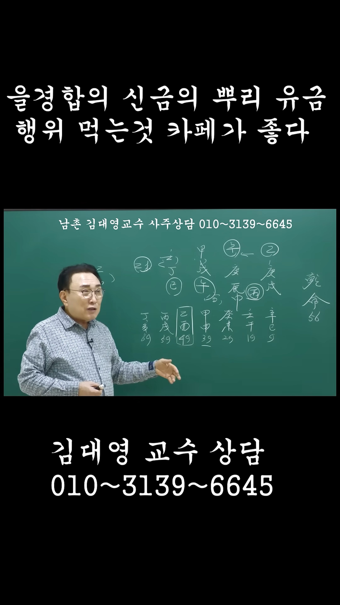

남촌물상TV 전체 문서 › Shorts S0127
을경합의 신금의 뿌리 유금 행위 먹는 것 카페가 좋다

| 문서 번호 | S0127 (Shorts (쇼츠)) |
|---|---|
| 영상 URL | https://www.youtube.com/watch?v=dVeyj9fi2mg |
| 영상 ID | dVeyj9fi2mg |
| 게시일 | 2025-12-13 |
| 길이 | 0:58 (58초) |
| 조회수 | 1,641회 (수집 시점 기준) |
| 카테고리 | Education |
| 자막 | ko (자동생성) |
| 수집 시각 | 2026-08-30 19:08 (KST) |
영상 설명 (YouTube 설명 원문 그대로)
사주상담 # 물상론 사주# 궁합# 택일#
남촌물상론#
전체 자막 (23구간 · 타임스탬프 클릭 시 해당 장면으로 이동)
[0:01]39대운에 예를 들어서 39대운에
[0:05]갑신대운 아니에요.
[0:07]>> 이제 이때부터 이때가 보면 어떠냐?
[0:09]이때가 갑목이 심어질 거 아닙니까?
[0:12]>> 그러면 신유술이 된다는 얘기 나오죠.
[0:15]신과 술이 있으면이
[0:17]>> 사화에서 진토에서 육음을 끌어당길
[0:20]수가 있으니까 진진 진진수 되잖아요.
[0:22]그때 이때는 조금 낮았겠지. 그러니까
[0:25]아, 잘될 거지. 이렇게 생각을 했을
[0:27]거 아니에요. 그다음에 이제
[0:29]은류예요.
[0:31]자기가 여기에서 을류 것을을 목이
[0:35]사라지는 결과예요. 그럼여이
[0:38]대운에서는 목의 행위로서도 좀
[0:41]괜찮했겠지 생각이 든다면 월경 합으로
[0:44]사라진 거라 그 말이에요. 월경 합을
[0:46]하게 되면이 감 을목이 없어지고
[0:49]신금이 됐다는 얘기서부터 네가 뭘
[0:52]해야 돼? 유금 행위를 해야 된다 그
[0:53]말이야. 자, 그러면 유금 행위가
[0:55]아까 카페나 먹는 거 하면 돼, 안
[0:57]돼?
칠판 원국 판독 (영상 프레임을 AI가 시각 판독 · 원판 대조 필수)
乾造
천간
庚
천간
庚
천간
戊
천간
癸
지지
戌
지지
辰
지지
午
지지
亥
판독 신뢰도: 높음
판독 노트: 을경합 판, 乾造 56, 대운 辛巳9~丁亥69, 乙○↔庚 을경합 표시 · 시점 0:26 · 해당 장면 보기↗
자막은 YouTube에서 제공하는 한국어 자동음성인식(ASR) 트랙의 원문입니다. 고유명사·한자 용어·숫자 표기에 자동인식 특유의 오류가 있을 수 있어, 원문을 가능한 한 그대로 보존했습니다. 위에 칠판 원국 판독 섹션이 있는 영상은 화면 프레임을 AI가 시각 판독한 것으로 신뢰도 표기를 확인하고, 없는 영상은 화면 도표가 문서에 포함되지 않습니다.